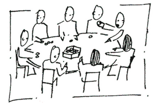

Conselhos da Administração Superior na UFU(){
Mundo Acadêmico

Você sabe quantos conselhos superiores existem na UFU? Sabe o que cada um faz? Acompanhe nesta reportagem os papéis desempenhados por cada conselho da nossa instituição.
De acordo com o regimento geral da UFU, a universidade conta atualmente com cinco Conselhos Superiores que juntamente com a Reitoria formam os órgãos deliberativos da Administração Superior. São eles:
- Conselho Universitário (CONSUN);
- Conselho Diretor (CONDIR);
- Conselho de Graduação (CONGRAD);
- Conselho de Pesquisa e Pós-Graduação (CONPEP);
- Conselho de Extensão, Cultura e Assuntos Estudantis (CONSEX).
Cada conselho desempenha importantes tarefas e, juntos, determinam as diretrizes, políticas e metas da universidade. Veja nas páginas a seguir algumas atribuições destes conselhos, bem como os membros que compõem cada um destes:
Referências:
Sobre a UFU
Regimento geral da UFU
UFU: Histórico e Estrutura
Conselhos Superiores - UFU
APUBH
}